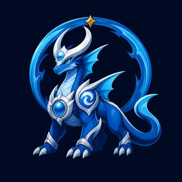
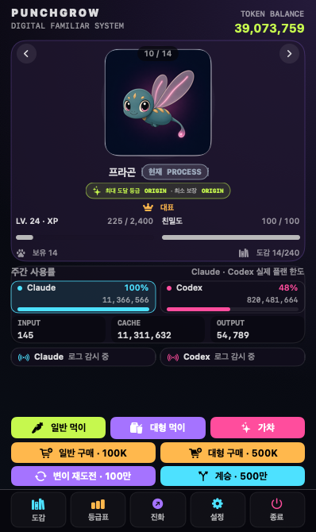
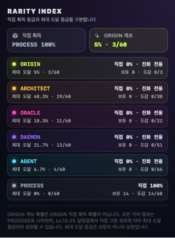
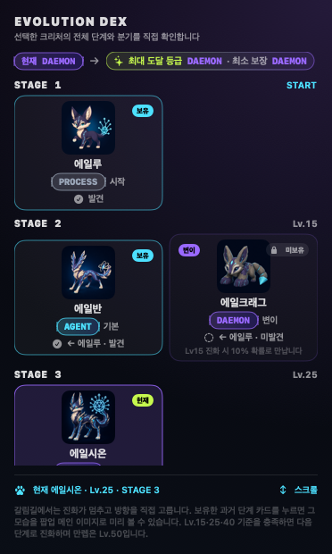
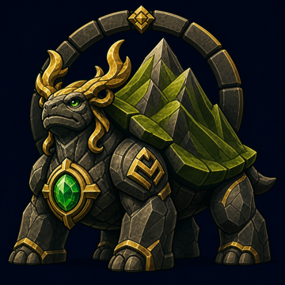

STATEPG-244

WATER / ORIGIN
네르바실
세상이 잊은 모든 순간을 보존하는 첫 번째 물결.
OPEN SOURCE / LOCAL-FIRST / macOS
Claude Code와 Codex 사용량을 성장 에너지로. 작업 내용은 Mac 밖으로 보내지 않고, 당신의 코딩 리듬으로 256종 크리처를 키우세요.
v0.4.0 HOMEBREW · 256종 · CURRENT MAIN + DEX · 256종

01 / THE LOOP
사용량 숫자는 토큰이 되고, 토큰은 수집과 성장의 선택지가 됩니다. 모든 개체는 작은 PROCESS에서 시작합니다.
Claude Code와 Codex의 로컬 사용량 증가분을 읽습니다.
쌓인 토큰으로 64개 시작 계보를 발견합니다.
먹이와 선택으로 크리처를 성장시키고 진화시킵니다.
분기와 변이를 따라 256종 도감을 완성해 갑니다.


02 / ELEMENTAL ORIGINS
STATE, EXECUTE, ROUTE, STORE. 세계가 처음 실행될 때 분리된 네 힘은 PROCESS에서 ORIGIN까지 진화합니다. 256종 전체 도감 보기

WATER / ORIGIN
세상이 잊은 모든 순간을 보존하는 첫 번째 물결.
FIRE / ORIGIN
가능성을 점화해 현실로 밀어내는 최초의 의지.
WIND / ORIGIN
존재 사이에 길을 만들고 첫 숨을 운반한 지배자.

EARTH / ORIGIN
모든 실행의 결과를 등에 지고 버티는 최초의 기반.
03 / PRIVACY BY DESIGN
PunchGrow는 로컬에서 실행됩니다. 수집은 명시적으로 켜야 시작되며, 프롬프트와 응답, 소스 코드, 명령어, 프로젝트명, 계정 정보는 게임 데이터에 저장하거나 전송하지 않습니다.
개인정보 보호 구조 자세히 보기✓ token_count accepted
✓ timestamp accepted
× prompt never stored
× source_code never stored
× file_path never stored
04 / BUILT IN THE OPEN
앱, 공개 사이트, 실험용 웹 스택과 문서의 경계를 분명히 나눴습니다. 처음 방문한 기여자도 어느 폴더에서 시작해야 하는지 바로 찾을 수 있습니다.
macos/현재 배포하는 SwiftUI 메뉴 막대 앱과 테스트, 빌드 스크립트.
Swift 6 · macOS 14+website/지금 보고 있는 GitHub Pages 정적 사이트와 256종 공개 도감.
HTML · CSS · JavaScriptweb/ + server/인터넷 서비스가 아닌 로컬 Docker 웹 실험 환경.
TypeScript · PostgreSQLdocs/ + 문서/사용 가이드와 공개 QA, 제품 결정과 디자인 원칙의 기록.
Guides · Decisions · PRD05 / INSTALL
Apple Silicon Mac과 macOS 14 이상이 필요합니다. Homebrew v0.4.0 릴리스와 현재 main 소스·공개 도감에는 모두 64개 시작 계보·256종이 있습니다.
READY TO GROW?